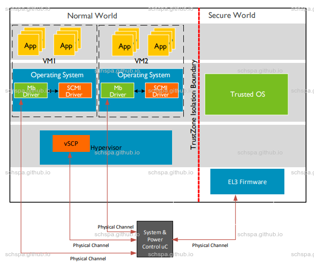

Arm Scmi Archicture
简介
Arm System Control and Management Interface
- Discovery and self-description of the interfaces implemented by the platform.
- Agent-specific resource isolation interfaces for dynamically configuring an SCMI-compliant agent’s access to devices and protocols.
- Power domain management interfaces to place a given device or domain into the various power-saving states that it supports.
- Performance management interfaces to control the performance of a domain which, in turn, is composed of compute engines, such as Application Processors (APs), GPUs, or other accelerators.
- Clock management interfaces to set and enquire rates on platform-managed clocks.
- Sensor management interfaces to read sensor data and be notified of sensor value changes.
- Reset management interfaces to reset peripherals or reset domains.
Archicture
System Control and Management Interface
Power and Performance Management using Arm® SCMI Specification White Paper
SCMI 1.0 (May 2017)

- Discovery and self-description of the interfaces it supports
- Power domain management, which is the ability to place a given device or domain into the various power-saving states that it supports
- Performance management, which is the ability to control the performance of a domain that is composed of compute engines such as application processors (APs), GPUs, or other accelerators.
- Clock management, which is the ability to set and inquire rates on platform-managed clocks.
- Sensor management, which is the ability to read sensor data, and be notified of sensor value changes.
SCMI 2.0 (July 2019)
- fast channel support
- Power Domain Management pre-notification suppor
- Agent-specific Resource Isolation capability as a part of Base protocol.
- Reset Management Protocol.
- Renamed Mailbox Transport to more appropriate Shared Memory based Transport and made changes to allow SMC/HVC based doorbells.
- Added support for notifications to agents on performance level change events triggered by external factors.
SCMI 3.1 (Jan 2022)
Usage
- basic usage
- 支持trusted world的使用方法
- 虚拟化系统ä¸çš„使用方法
- 支持硬件虚拟化的使用方法
basic usage
支持trusted world的使用方法
虚拟化系统ä¸çš„使用方法
支持硬件虚拟化的使用方法

Performance
fastcall
部份场景对性能有一定的要求（DVFS）
Security
permission control
- Hypervisor has access to all channels.
- Each channel has a unique agent-id allocated by System Controller.
- Discoverable by BASE_DISCOVER_AGENT command
- Discoverable by BASE_DISCOVER_AGENT command
- Each channel has a unique agent-id allocated by System Controller.
- Hypervisor chooses channels to allocate to VMs.
- Hypervisor configures access permissions of agents
- BASE_SET_DEVICE_PERMISSIONS
- BASE_SET_PROTOCOL_PERMISSIONS
- BASE_RESET_AGENT_CONFIGURATION
- Only one control channel has permissions to use above commands. Access control imposed at boot by System Controller.
- Control channel identification is done through firmware tables and is not discoverable.
- BASE_SET_DEVICE_PERMISSIONS
- Hypervisors maps configured channels into VM space and starts VM.
- VM can use channel mapped to its space.
- Can send commands to access resources allowed by the hypervisor over the channel.
- Can send commands to access resources allowed by the hypervisor over the channel.
Realm Management Extension (RME)
Armv9-A: Realm Management Extension (RME)
https://developer.arm.com/documentation/den0129/aa